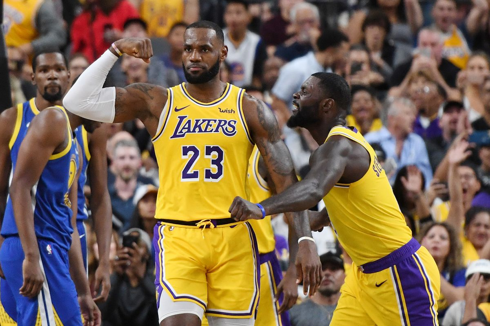
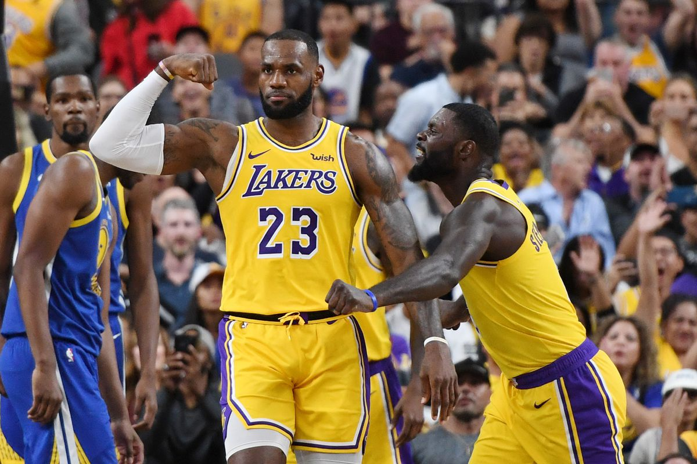
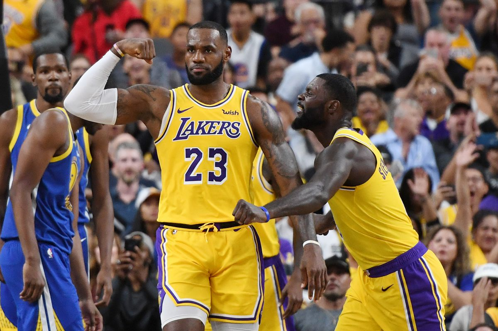

Roger Federer (Basileia, 8 de agosto de 1981) é um tenista suíço recordista de títulos de Grand Slam com vinte conquistas. Dentre seus 102 torneios ATP, também possui: seis ATP Finals (recorde), 28 ATP Masters 1000, 23 ATP 500 (recorde) e 25 ATP 250. É o jogador que ficou por mais tempo como número um mundial, tendo um total de 310 semanas compreendidas entre 2004 e 2018. Entre 2004 e 2008, passou 237 semanas consecutivas como número um mundial o que é um recorde do tênis. Venceu seu primeiro torneio ATP oficial em Milan 2001. O último foi em 2019, o que lhe dá o recorde de maior distância entre esses dois títulos (dezoito anos). Tal longevidade o permitiu ultrapassar, assim como Jimmy Connors, os números de cem títulos e 1200 vitórias na carreira.
É o atleta mais vezes premiado na história do Prêmio Laureus do Esporte Mundial.

LeBron Raymone James (Akron, 30 de dezembro de 1984) é um jogador profissional de basquete norte-americano que joga pelo Los Angeles Lakers da NBA. Em 16 temporadas na NBA, conquistou três títulos da liga, vencendo nas três conquistas o prêmio de melhor jogador das finais (em 2012, 2013 e 2016), além de ter sido nomeado o jogador mais valioso da temporada regular em quatro ocasiões (em 2009, 2010, 2012 e 2013). Individualmente, detém inúmeros recordes na NBA, como o de maior pontuador da história do Cleveland Cavaliers, do All-Star Game e dos Playoffs, bem como o de jogador com mais seleções para o All-NBA Team. Em 2017, foi considerado em rankings elaborados pela CBS Sports e Fox Sports, o segundo maior jogador de todos os tempos da NBA, somente atrás de Michael Jordan.[1][2][3][4][5] Com a Seleção Americana, foi duas vezes campeão olímpico (em 2008 e 2012), recebendo após a conquista em Londres 2012, o prêmio de atleta masculino do ano pela USA Basketball. Em 2007, também fez parte do elenco norte-americano, campeão da Copa América em Las Vegas.
Apelidado de King James, James teve uma carreira muito boa em St. Vincent - St. Mary, escola de sua cidade natal, Akron, Ohio. Ganhou três Sr. Basquetebol de Ohio, que o promoveu altamente na mídia nacional como um futuro superstar da NBA. Foi selecionado na primeira escolha geral do Draft da NBA de 2003 pela equipe do seu estado natal, o Cleveland Cavaliers.